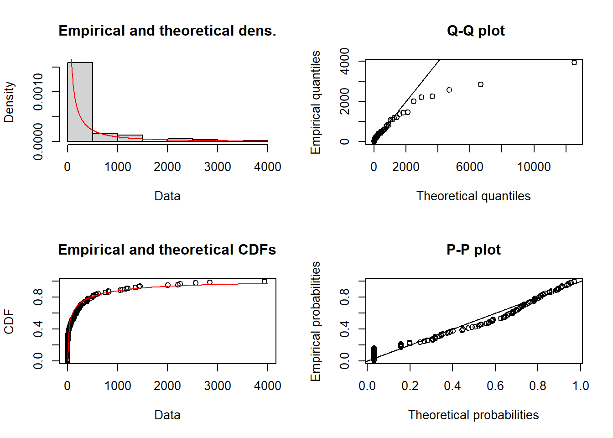
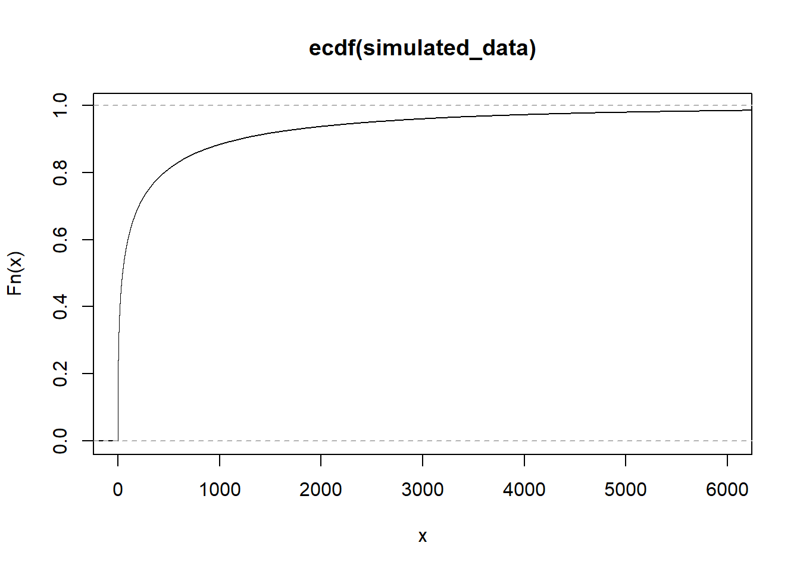

Modelling the probability of earthquakes (M >= 5.0) in North Anatolian Fault Zone
Visualization of earthquake data
Let’s look and visualize the historical earthquake data.

Time Span between Earthquake Occurrences
```{r}
p <- ggplot(data_diff_between_eq, aes(x=diff)) + geom_histogram(aes(y = ..density..)) + geom_density()
p
```
```{r}
p2 <- ggplot(data_diff_between_eq, aes(x=diff)) + geom_boxplot()
p2
```
Earthquake Count By Year
```{r}
p3 <- ggplot(data_count_by_year, aes(x=year, y=count)) + geom_line()
p3
```
Modelling the probability
Let’s fit Weibull distribution to distribution of days between two earthquakes occurred successively.
```{r}
plotdist(data_diff_between_eq$diff, demp = TRUE)
```
Fit the distribution:
```{r}
# add all data points to 0.1 for avoiding zero division errors
data_diff_between_eq$diff <- data_diff_between_eq$diff + 0.01
wei.fit <- fitdist(data_diff_between_eq$diff, "weibull")
```Check convergence, 0 means procedure was converged:
```{r}
print(wei.fit$convergence)
```[1] 0Results:
Estimate
x sd shape 0.3647605 0.0294541 scale 124.4717945 34.3619153 Fit quality:
value loglik -618.5651 aic 1241.13 bic 1246.494 Plots:

Let’s calculate mean occurence period of earthquakes which have magnitudes equal or bigger than 5 (simulation and theoretical mean):
```{r}
shape.v <- as.numeric(wei.fit$estimate[1])
scale.v <- as.numeric(wei.fit$estimate[2])
simulated_data <- rweibull(100000, shape = shape.v, scale = scale.v)
```| value | |
|---|---|
| Simulated mean | 535.6679525 |
| Theoretical mean | 545.0535056 |
It is expected to have another earthquake having magnitude equal to 5 or above are average 545 days later than the preceding one.
Let’s plot the CDF:
```{r}
plot(ecdf(simulated_data), xlim=c(0, 6000))
```
If we look the data, the last earthquake was occurred at 2006-10-24, so 5753 days passed since last earthquake was occurred. The risk of an earthquake happening today is 98 %.
Full source code: https://github.com/mrtkp9993/MyDsProjects/tree/main/EarthQuakeProbability
References
\(^1\) Earthquake historical data was downloaded from: http://deprem.afad.gov.tr/depremkatalogu
\(^2\) Map shape file was downloaded from: https://gadm.org/
\(^3\) Weibull distribution in earthquake probability modelling: Yilmaz, Veysel & Erişoğlu, Murat & Çelik, H.. (2004). Probabilistic Prediction of the Next Earthquake in The Nafz (North Anatolian Fault Zone), Turkey = Kuzey Anadolu Fay Zonunda (Nafz) Gelecek Depremlerin Olasılıksal Tahmini. Dogus University Journal. 5.
\(^4\) Weibull distribution fitting: https://stats.stackexchange.com/questions/230937/how-to-find-initial-values-for-weibull-mle-in-r
Citation
@online{koptur2022,
author = {Murat Koptur},
title = {Modelling the Probability of Earthquakes {(M} \textgreater=
5.0) in {North} {Anatolian} {Fault} {Zone}},
date = {2022-08-25},
url = {https://www.muratkoptur.com/MyDsProjects/Analysis.html},
langid = {en}
}